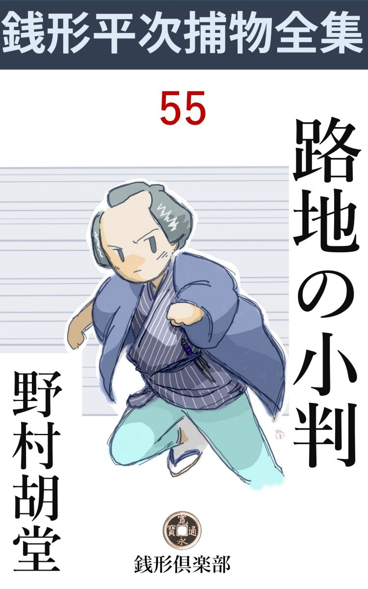
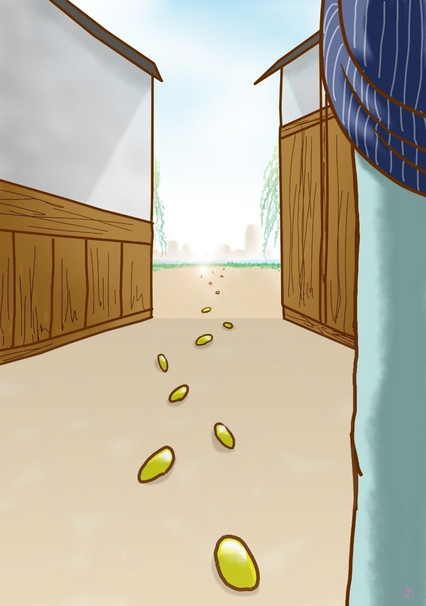

| 路地の小判: 銭形平次捕物全集第55話 (銭形倶楽部) | |
| 野村胡堂 | |
| ZENIGATA CLUB (2018) | |

一
「親分、笑っちゃいけませんよ」
「何だ、八」
「親分もあっしも同じ人間でしょう」
ガラッ八の八五郎はまた変なことを言い出しました。
「その通りだ、眼が二つ、口が一つ、なるほど、こいつは不思議だ。今まで気がつかなかったが、手前 の言う通りお互にあんまり変っちゃいないね、八」
銭形平次もこの調子です。
「まぜっ返しちゃいけません。------ね、親分、その同じ人間のあっし が、どう修業しても、親分のような良い御用聞になれないのは、どう言うわけでしょう」
ガラッ八はつくづくそう言うのでした。歳は幾つも違わないはずですが、人間の貫 禄 はあまりに違い過ぎます。
「そう言うなよ、八、手前 の方が余っほど人間が出来ているのかも解らないじゃないか、神様や仏様から見れば」
「神様や仏様は勿体 ねえ、せめて八丁堀の旦那衆が見て、良い御用聞だとなるには、何か秘伝のようなものがありゃしませんか」
「口伝 も極意もないのがこの道さ」
「それとも、摩 利 支 天 様へ願をかけるとか何とか」
「角力 取りじゃあるまいし」
「でも、何かありゃしませんか、親分、あっしはどうせ大した人間じゃねえが、お上の御用を聞いてる以上は、一生にたった一度でいいから、八五郎は天晴 れだ------と言われてみてえ、それには何か、心掛けのようなものかありゃしませんか」
ガラッ八の八五郎は、日頃になく思い込んだ様子で言うのでした。擬物 結城 の狭い単衣 、長んがい顔を引締めて、思いこんだ様子が、日頃が日頃だけに、一脈の物の哀れを感じさせるのでした。
「八、たいそう改まったが、御用聞には型も極意もねえ。『馴 れ』だけに頼って行くのは下 根 、理詰めに物を考えて犯人を挙げるのは中品 、『勘』で行って、百に一つも間違わないのが上々だ。だから手前だって、下手に『馴れ』や『屁 理 屈 』にはまり込まなきゃ、思いの外の手柄をするかも知れねえ。こんど何かあったら、存分にその鼻を働かして、嗅 ぎ出して見るがよい」
こうしんみり 言う平次、それほどの名人になって、快 刀 乱 麻 を断つような明智の持主でも、最後はやはり人間の『直覚』に頼らなければならないことを知っているのでした。
「勘なら、姐御なんざ大したものだぜ、あっし の腹の中から、財布の中まで見透しだ」
「あれ、八五郎さん」
お静はたまりかねて、障子越しに声を掛けました。
「そこにいなすったんか、------こいつはいけねえ」
「朝の御飯の催促なんでしょう」
「ヘッヘッ、図星で、ここに泊ると、お茶と香の物がたまらねえ」
「お世辞を言っちゃいや、八五郎さん」
まだ娘気分の抜け切らぬお静は、こう言って、朝の支度に取掛りました。
丁度その時でした。
「大変！ 親分さん、すぐお願い申します」
飛込んで来たのは、横山町の鳶頭 です。
「どうなすった、鳶頭」
「大黒屋の番頭正次郎さんが殺されて、今日細川様へ納める五千両の大金が、煙のように消えてしまいましたぜ」
「なるほど、そいつは大変だ」
平次は箸 を投り出して立上がりました。横山町の大黒屋市兵衛というのは、油の小売から仕上げて、今では廻船問屋から、大名方の御金御用達まで承 っている大町人だったのです。
それから半刻 の後、銭形平次と八五郎は、横山町の現場に駈け付けておりました。
「寄っちゃならねえ、手なんか付けると掛り合いだぞ」
番太の老爺 と町役人が声をからして群 がる弥次馬を追っ払っているのも無理はありません。大黒屋の裏口で殺されたという、番頭正次郎の死体は取り入れましたが、不思議なことに死体があったという裏口から、大川へ通う路地には、栞 代 りに撒 いたように、真新しい小判が、幾十枚となく落散っているのです。
弥次馬の眼が、その小判に光ったのも、番太が声をからしたのもそのため、死体はともかく、路地の小判までも、検屍の役人が来るまで、手をつけてはならなかったのでした。

「銭形の親分さん、とんだ御苦労様で」
主人の市兵衛は、さすがに落着いてはおりますが、今日に迫る五千両を、どう工面して細川様へ納めたものか、その心配に打ちひしがれておりました。
後ろから顔を出したのは、老番頭の嘉助と手代の福三郎、これは遠縁に当る男で、いずれは、大黒屋の姪 で、奉公人とも娘分ともなく養われている、お徳と嫁 合 せて、暖簾 を分けるだろうと言われている男でした。
「とんだことでしたね、------これほどの騒ぎを朝まで誰も知らなかったのですね」
「誰も気がつきません」
と主人市兵衛、六十近いが少し肥った、精力的な感じの男です。
「五千両の金が用意してあることは、誰と誰が知っていました」
「店中で知らないものはありません。御領地の熊本から船で送られた、肥 後 米 の代金でございますから」
そう言ううちにも、市兵衛の心痛は目に見えて深まる様子です。
「失礼ですが、それを今日中に納めなさる当 がありますか」
平次の問いは露骨で無遠慮でした。
「なんとかしなければ、私は頸 でも縊 らなければなりません」
五千両の現金は大黒屋にとっても大金でしょう。主人の後ろに中腰になっている大番頭の嘉助が、いても立ってもいられないほど気を揉 んでいる様子を見ると、この工面は市兵衛が軽く言うほどの些細なことではないでしょう。
平次は雇人 達を一とわたり見廻すと、若い手代の福三郎に案内されて、六畳の仏間に通りました。
顔に掛けた巾 を取ると、荒縄で喉笛を絞め上げられた、番頭正次郎の顔は、二た眼とは見られない凄 まじいものです。
「お前さんは？」
「あの、徳と申します」
丸ぽちゃの快活そうな娘は、大して臆 れた色もなく、死体の番をしているのでした。
「男達が寄りつかないのに、親切なことだね、------変死人は気味の好いものではないが」
平次はこの親切で明るい娘を勇気づけるように、こんな事を言っております。
「でも、正次郎さんには、お世話になりましたし、男の方は外に用事もあることですから」
ともすれば愛嬌 八重歯が漏れて、頬へ靨 の寄るのを、場所柄必死と噛み殺していると言った肌合いの娘です。年は少し取って、厄 ------どうかしたら、二十歳を越しているのかもわかりません。
「八、見るがいい」
平次は死体の頸から切り離して、そのまま肩のあたりに掛けてある荒縄を指しました。
「船具 の縄だね、親分」
下手人の当りもこんなところからつくでしょう。ガラッ八は尖 鋭 なカンを働かせるつもりで、頻りに鼻をヒョコつかせております。
「喉の絞めた痕 を見るがいい」
「------」
八五郎は唸 りました。平次が指摘した死体の喉には、荒縄とは似もつかぬ、細くて深い溝が一と筋、歴々 と走っているではありませんか。
「あれはカンじゃない、物の理屈だ。番頭さんを絞め殺したのは、真田 紐 のような、丈夫で細いものだ。下手人はその紐を捨てて行くと、足がつくと思ったが、何で殺したか判らないと、後が面倒で、細い真田紐を死骸の頚 から解いて、その後へ、その辺に落ちていた荒縄を巻きつけた」
「------」
ガラッ八は一句もありません。こうなると、下根 のカンの頼りなさが、はっきり呑込めます。
「この下手人は容易ならぬ人間だよ、落着いて、横着 で、考え深くて------」
平次は明日の大取組を前に、相手の力量を考える力士のように、思わず深々と腕を組みました。
「親分」
心配そうにその顔を覗く八五郎。
「少し外へ出て見よう」
平次は八五郎を促 して、外へ出て行きました。
二
路地の死体のあったあたりに落ちていた小判は、丁寧 に勘定すると七十八枚、それから横山町の大通りから両国の方へも、バラバラと二十二三枚こぼれておりましたが、朝のうちに往来の人に拾われたのも何枚かあるでしょうから、正しい数は判りません。
小判の栞 を辿 って行くと大川端で、ここには幾艘となく船が舫 っております。
「八、昨夜から暁方へかけて、出て行った船がなかったか、訊いてくれ」
八五郎は飛んで行きました。トボケタ顔と、暢気 な調子でカモフラージュして、この大事な問いを八方へ持掛けましたが、結局、
「誰も気がつかなかったそうですよ、船頭は舫 っている時でも気が張っているから、艪 や擢 の音を聞き逃すはずはないと言いますよ」
「フーム」
水際に立って、折から引汐の川底ばかり睨んでいた平次も、諦めて立ち上がります。いつぞや水の中に千両箱を三つ隠した曲者のことを想い出したのでしょう、しかし、大川では人目が多い上、この汐具合では、千両箱は愚 か、香箱も隠せそうはありません。
二人はがっかりして引揚げました。主人の市兵衛は五千両の工面でしょう、心痛と懊 悩 の看板のような顔をして出かけ、老番頭の嘉助は眼鏡を掛けて、算 盤 と首っ引きのまま、その側に手代の福三郎を始め、丁稚 小僧は、立ったり坐ったり、唯そわそわとしております。
平次は廊下続きに土蔵の方へ行くと、後から冢内顔の手代が二三人跟 いて来ましたが、それをみんな追い返して、まだ仏様の世話をしているお徳を呼出しました。
「誰が土蔵破りか解らないから、うっかり案内を頼めないよ、お前さんなら大丈夫だろう」
「------」
お徳は生真面目にうなずいて、廊下伝いに土蔵へ案内Ｌました。
二た戸前の土蔵ですが、五千両持出された方は、廊下続きの内蔵で、廊下の雨戸は外から破られ、主人の部屋から持出した鍵 で、二重の締りをやすやすと開け、中から明日の用意に積んであった千両箱を五つ、物の見事に持出してしまったのです。
「ところでお徳さん、------この店中で、主人から一番信用されているのは誰だろう」
平次は妙な事を訊ねました。
「殺された正次郎さんでしたよ、------嘉助さんも、あの通り年を取ったし」
お徳は躊躇 する樣子もなくこう言い切ります。
「福三郎は？」
「可愛がられてはいましたけれど、------お金の事は任せてくれなかったようです」
お徳は少し淋しそうでした。許婚 の福三郎が、どんなに良く勤めても、正次郎ほどの信用のなかった口 惜 しさを、処女らしく隠そうともしません。
「親分さん、私が御案内いたしましょう、------お徳さんはお茶の支度でもするがいい」
大番頭の嘉助は、店中の不安を代表してやって来ました。
「それはいい塩梅 だ。いまお前さんに来て貰おうと思っていたところだ」
平次は愛想 よく迎えます。
「親分さん、正次郎も可哀想ですが、私は旦那がお気の毒でなりません。屈 めたことのない腰を屈めて、当てもなく出て行きましたが------」
嘉助はフッと口を噤 みました。こんな事まで言ってはと思い当ったのでしょう。
「五千両盗られると、後には少しの用意もなかったかい、番頭さん」
平次の胸には、妙な疑いが芽ぐみます。
「そんな事は御座いません。五千両盗られても、まだ二千両はあの通り用意がございます。外に掻き集めると、千両はあるでしょう、差し当りの不足は二千両ほどで」
「それ位のことなら、細川樣へ申上げて、日限を延ばして貰うわけには行かないものかな」
「とんでもない、大名方と来た日には、待て暫 しがございません。それだけにまた私どもの利潤 も多いわけで、------今日納める五千両が纏 まらないと、出入り差止めになり、仲間への顔向けもならなくなります」
「なるほど、それは困るな」
平次は大番頭の指した千両箱を動かして見ました。重さからの感じが、間違いもない千両箱です。
「親分、主人の行く先を突き止めて来ましょうか」
ガラッ八は鼻をうごめかします。いつぞや浜町の浪花屋の主人が、払 に困って、三千両を盗まれたと届出た例のあるのを思い出したのでしょう。
「馬鹿、------つまらないカンなんか働かせて、人様の物笑いになるよ。それよりこの町内を始め、浜町から両国へかけて、なにか変ったことがないか見て来るがいい。船で逃げたんでなきゃ、下手人かその相棒はまだこの辺にウロウロしているに違いねえ、あれだけの小判をバラ撒 いて、眺めていることだろう」
「なるほどね」
ガラッ八は飛出しました。
平次はその上帳面まで見せて貰いましたが、大黒屋も、五千両盗まれた上、また半日のうちに、五千両纏 めるには困った様子ですが、商売の方は行詰った様子もなく、一つの土蔵の中には、穀 物 が一パイ、一つの土蔵の中には、金に飽かして買い込んだ、骨 董 什器 が一パイ入っております。
三
「親分、ちょいと」
ガラッ八は四半刻ばかりすると帰って来ました。
「なんだ、八」
「変な野郎がいますよ。余っぽど引っ括 って来ようかと思いましたが、親分に訊いてからと思ってそっと帰って来ましたが」
「なんだ、それは？」
「今日は両国稲荷の縁日でしょう」
「それがどうした」
「大道見世物や、露店が二三百出ますぜ」
「------」
「夜の明けないうちから小屋掛けをしているに不思議はないが、一つ恐ろしくかけ離れて、横山町三丁目に、河童 の塩 漬 を見せる小屋があるから驚くでしょう」
ガラッ八は勢い込んで続けます。
「ちっとも驚かないよ、地割りに漏れたもぐりの香 具師 だろう」
「大きな親爺 が、女房と二人で、今から木戸に坐っていますが、プカプカ燻 している煙草は、国府 の上等、------お大名の御用に上がるような葉だったらどうします、親分」
「少しおかしいな」
「少しどころじゃありません、あれが昨夜の泥棒に違いないと思うがどうです。これは『馴れ』や『理屈』じゃない、あっし のカンで」
「フーム」
「五千両持出したところを、番頭の正次郎に見付かり、追っかけて来たのを路地で絞め殺した、------が、町木戸がうるさいから、夜中じゃ遠くまで逃げようはない、ことにこの辺は浅草御門や、両国の橋番所、伝馬町の大牢 まで近いから、千両箱を五つ持って、どこへも行けるわけはねえ、幸い用意した河童 の塩 漬 、あの中へ隠して、小判の塩漬などは良い知恵じゃありませんか」
いやもうガラッ八の得意さ------
「五千両盗んだ大泥棒が、人まで殺して逃げ場に困っているくせに、国府などを喫 っているだろうか」
「------」
「八、あまり騒ぐんじゃないよ、そっと行って、裏から呼出して、十手のガン首でも見せて、河童の塩瓶 を引っくり返してみな、中から、今朝拾った小判が二枚か三枚出て来るから」
「ヘエ------」
「その上うんと脅 かして、昨夜から今朝へかけて、横山町をうろうろしていた人間がなかったかどうか、訊いてみるがいい」
「へエ------」
ガラッ八は一句もありませんでした。平次のカンの素晴らしさに圧倒されて、そのまま飛出しましたが、間もなく、旋風 のように飛んで帰りました。
「どうした、八」
「塩漬の中には、小判なんかありませんよ。河童の見世物は、死んだ犬の仔を乾 し固 めたんで」
「国府は？」
「それを訊くと元は町人で、煙草だけは贅 を尽したから、落ちぶれても馬糞 煙草 は喫 めねえ、------と言やがるんで、その口の下から女房も、うちの人は酒を飲まないから、せめて煙草の贅をさせているんですよと------顎 を突き出しましたぜ。もっともそう言う女房は少し飲 っていたようで、亭主の国府に張合って、朝から濁 酒 でも呷 ったんでしょう」
「八、そいつは本当か」
「本当にも嘘にも、作の入れようがねえ」
「財布の中にも塩瓶にも金がなきゃ、そいつは思いの外 大 物 かも知れない、一両拾ったなら判るが、香 具師 がただの道楽で国府は変り過ぎる、来い八」
平次は飛出しました。その頃の国府を燻 らすのは、今の金口や葉巻にも匹 敵 する贅で、もぐり の香 具師 の好みにしては、少し変でないことはありません。
四
「御用ッ」
八五郎はいきなり河童の見世物へ飛込みました。何かよくない尻があったものと見えて、昼にも間があるのに幕張りの粗末な小屋を畳みかけていたのです。
「何をしやがる。安岡っ引きに御用呼ばわりなどをされる覚えはねえ、側へ寄ると河童 をけしかけるぞ」
「神妙にせい」
「糞 でも喰らえッ」
二匹の犬のように、猛然と噛み合う二人、後ろからは女房がガラッ八の髷 節 へ、必死とブラ下がってしまいました。
「あッ、痛えッ、放せッ」
「何をッ」
滅茶滅茶な騒ぎです。一と足遅れて駈け付けた平次は、漸くこの噛み合いを分けて、男女二人をキリキリと縛り上げました。
「歩けッ」
場所は両国、盛りこぼれるような弥次馬の中を、縄付を引いて行く照 臭 さ、あまり人を縛ったことのない平次は、ガラッ八の英雄的な得意さに任せて、一と足先に番所へ辿 り着きます。
「お、銭形の、今日はお手並拝見に出て来たよ」
「お、三輪 の兄哥」
銭形平次の顔は少し曇りました。またこの競争相手------三輪の万七------が出て来ては、事件が反 ってこんがらかりそうでならなかったのです。
「大層遠慮するじゃないか、銭形の。何だって大黒屋の主人を縛らないんだ。いつぞや浜町の浪花屋がやった術 だ、今日に迫った五千両の工面に困って、番頭を人身御供 に上げて一時逃れをするつもりだろう」
「それは違う、三輪の。あの術 はもうこの界隈 で二度とくり返す馬鹿はあるまい」
「そう思うところが付け目さ」
「それに大黒屋の身上 は、三千両五千両で困るほとに傾 いちゃいない。差し当り現金を集めるのに困ったところで、昼頃までには、市兵衛はきっと五千両拵 えるから」
「大層信用したんだね」
「見ているがいい、今相棒を一人縛って来たから、あの男が口を割りさえすれば、五千両盗んだ奴も、番頭の正次郎殺しもすぐ判る」
平次は河童の塩漬の中にも、香具師の懐中にも小判の片 らも見えないとすれば、早くも何処かへ隠したか、でなければ、横合いから五千両を攫 われて、自 棄 のやん八で国府と濁酒に贅を尽くしていたのだと睨んだのです。
「名前は何と言う、どこの者だ」
ガラッ八の引いて来た香 具師 夫婦を、平次は静かに迎えて、こう訊ねました。
「名前は銅六、------銅屋 六兵衛と言うんだ、女房はお浜、二人共江戸の生れだ」
銅六は昂然 としておりますが、言う事は思いのほか素直です。
「銅六------そうか、いい悪党だ。何だって五千両の餌 なんぞに引っ掛ったんだ」
「へッ、へッ、銭形の親分さん、------へッへッ存じていますよ、一度は鼻を明かせようと思った相手だ。忘れてなるものか、------」
「そんな事はどうでもいい、俺は大方筋書 を読んだつもりだが、------お前の口から聴きたい、店で手引きをしたのは誰だ」
「ヘッ、ヘッ」
「福三郎か、嘉助か------」
「ヘッ、ヘッ、お察しの通りで、銭形の親分はさすがに眼が高けえ」
書き損ねの達磨 のような髯面を歪 めて、銅六はニヤリニヤリと笑うのです。
「馬鹿野郎」
銭形平次は立ち上がると、いきなり平手で銅六の頬 桁 を一つ喰わせたのです。『平次が縄付を撲 つ------』こんな事があり得るでしょうか、ガラッ八は眼の前で行 われた奇蹟に仰天するばかりです。
「あッ」
銅六もあまりの不意に、さすがに度胆を抜かれた様子です。
「たった今この平次の鼻を明かしてやりたいと言ったのは誰だ、そんな間抜けな心掛けだから、五千両チョロリと横取りされて、犬の子の死骸 の番人なんかしているじゃないか、その上正次郎殺しの罪でも背負い込んで、三尺高けえ木の上へ顎を載 っけりゃ世話アねえ」
「------」
「八、追っ付け旦那方が見えるだろう。ここに悪党がかったのが一人いるから、構うことはねえ、番頭殺しの下手人にして引渡してしまえ、------知れたこと、五千両は大川へ沈めたのさ。伝馬町へ送られりゃ、容易のことでは証 りが立たねえ」
平次の舌はその手よりも辛辣 です。
「わッ、冗談じゃねえ、俺が下手人なんかでたまるものか。五千両持出す相談には乗ったが、人なんか殺した覚えはねえ」
銅六もさすがに仰天しました。
「黙らねえか、悪党らしくもない、相棒の正次郎は殺されたんだ、お前の身の証りを立てる者は、この平次より外には一人もいねえ」
「恐れ入った、銭形の親分。みんな言う、勘弁しておくんなさい」
他愛 もなく崩折れる銅六。
「親分さん、この通り意気地のない亭主でござります。人相は悪党なみですが、とても人なんか殺せるような男じゃありません。五千両持出す話へ乗ったのも、この人にしちゃ荷が勝過ぎたんですよ、河童 の番人をする位が分相応で------」
女房のお浜は弁 じ立てます、此方が二三枚悪党が上でしょう。
五
銅六夫婦の言うのは、至って簡単でした。大黒屋の番頭正次郎とは、元よく暮していた頃からの知合いで、二三日前道で逢って合 力 を持ちかけると、それじゃ大黒屋の土蔵から、五千両持出すから、それを大川まで運び、船で永代の知合いの家へ隠してくれ、日は両国稲荷の御縁日の前の晩、時刻は丑刻 前後、場所は横山町三丁目と話が決って、銅六はいかさまの河童の見世物まで用意し、夜っぴてそこにいても、人に疑われないだけの工夫をしたのです。
「ところが、番頭さんはとうとう来ません、多分外に相棒を拵えたのだろうと、腹を立てて夜の明けるのを待っていると、大黒屋の裏口で、本人が殺されているという騒ぎじゃありませんか、癪 にさわるが、相手が死んじゃどうにもならない。中ッ腹で女房と喧嘩した上、女房が濁 酒 を呷ったから、あっし は国府 を買って思う存分喫 ったんで------」
銅六の話は馬鹿馬鹿しいがよく筋は通ります。
「それじゃ訊くが、正次郎を殺したのは誰だ？」
と平次。
「五千両横取りした奴でしょう」
「それは判っているが、正次郎が一番怖 がっていたのは誰だ」
「主人の市兵衛ですよ」
「それから」
「番頭の嘉助、------こいつはヨボヨボのくせに、算盤 がはっきりしているから、誤 魔 化 しがつかねえとね」
「福三郎は？」
「主人の遠縁で、大きな面 をしたいやな野郎だが、人間はあめえという話で」
「あとはどんな事を言った」
「あの家の中で、人間らしいのはお徳の阿魔 だ。あんな女は滅多にねえ------って言ってましたよ」
「よし、判った」
が平次はハタと行詰りました。金を持出したのは正次郎と判っても、その正次郎が殺されてしまっては、この先どこへ、疑いを持って行きようもありません。
「銭形の兄哥、------やはり主人が臭くはないのかえ」
三輪の万七はいい心持そうでした。が、幾度も幾度も懲 りているので、今度はさすがに縛ろうとは言いません。
大黒屋へ帰ると、中は火の消えたような淋しさ、雇人達は彼方、此方に幾かたまりにもなったまま、仏間には朋 輩 の死骸のあることも忘れて、押え切れない不安を語り合っております。
「銭形の親分さん、悪者が捕ったそうじゃございませんか」
お徳は飛んで出ました。
「捕まったよ、お徳さん」
「五千両は？」
「それがどこへ行ったか解らない、------もっとも蔵から持出したのは、正次郎と判ったが」
「えッ、あの、正次郎どんが------本当ですか、親分さん」
お徳の驚きは一と通りではありません。
「せっかく、死骸の番までして、誰も構わないのに、線 香 を絶やさないようにしている、お前には気の毒だが、正次郎は良くない男だ。子飼いの奉公人が、主人の身代に関 わるような金を持出して、罰 が当らずには済む筈はない」
「でも親分さん、死んだ者へ、線香一本上げる者もないような人達ばかりいる家なんです。正次郎どんばかり悪いとは言えませんよ」
「------」
お徳は妙に考えさせることを言います。
「この家はそんな家なんです、みんな銘々 のことしか考えてはいません」
「------」
平次の驚きの前に、お徳は淋しいが、妙に情熱的な笑いを見せて、元の仏間に入って行きました。間もなく鉦 の音がします。
申刻 近くなって、主人の市兵衛は二千両の現金を持たせて帰ってきました。それに蔵の中の二千両、あとは店やら奥から持出して五千両に纏め、番頭の嘉助に丁稚 を二人、鳶頭 までつけて、細川樣御中屋敷に送ってやりました。
「まず、これでよし」
ホッとした市兵衛の顔を見ると、平次は今まで、何にもしていなかった事を責められるような心持です。
六
五つの千両箱は、蔵から持出したに間違いはありません。廊下の軒下、ちょうど雨の後の軟 かい土の上に、乱雑に置いた跡まではっきり読めるのですが、家の中は言うまでもなく、隣りの穀 蔵 の米俵まで調べましたが、どこにも見付からなかったのです。
母屋 は、幾度も幾度も、床下も、天井裏も、下水の中も、ゴミ箱も見ました。が、五千両は愚 か、鐚 銭一枚その辺には見付かりません。
「引揚げよう、いつまでいても無駄だ」
暗くなると平次はもう見切りを付けました。
「下手人は逃出しますよ、親分」
八五郎は心配でなりません。
「五千両は重いよ、背負 って逃げるにしても、今日や明日じゃない」
「ヘエ------」
「せっかく取込んだ金を捨てるものか、帰ろう」
平次は未練 気 もなく立去りかけます。
「銭形の、俺が夜っぴて調べ上げて、下手人を縛っても構わねえだろうな」
三輪の万七は眼を光らせました。
「遠慮には及ばねえよ、三輪の兄哥」
平次は何のこだわりもありません。
「銭形の親分さん」
「何だ、お徳さんか」
小走りに追って来たお徳は、そっと平次の耳に唇 を寄せました。
「何んか変ったことがあったら、親分さんのところへ使いを出しますよ、------使いがなきや、私が一と走り------」
お徳は平次のファンの一人だったのでしょう。一つは夜っぴて踏み止って、みんなに厭な思いをさせる、三輪の万七の執 拗 さに反感を持ったのかも知れません。
「有難うお徳さん、頼むせ」
香 わしい息を頬に感じながら、平次はさり気なく言うのでした。
柳原土手の闇を急ぐともなく二人。
「親分、下手人は誰でしょう」
八五郎はたまりかねて声を掛けました。
「判らねえよ」
「五千両はどこへ持出したでしょう」
「それが判りゃ下手人は一刻経たないうちに挙げられる」
平次も本当に手掛りを掴 めなかった様子です。
「福三郎じゃありませんか------大黒屋の遠縁の者だが、番頭にもしてくれず、当分は暖簾 をわけて貰う当 もなく、思い合っているお徳と祝言をする見込みも立たず、主人の市兵衛を少しは怨 んでいる様子ですが------」
これがガラッ八のカンでしょう。
「それは俺にも判るが、福三郎は腹から善人で、おまけに気が弱い。カッとなったら人を殺せないこともあるまいが、企 んで人を害 める柄じゃないし、それに五千両を隠すなんて器用なことの出来る男じゃねえ」
「------」
場末の芝居の二枚目のような福三郎は、なるほど人を殺せそうもありません。
その晩は何事もなく明けて、翌る日の朝、辰刻 少し廻った頃------。
「親分さん、大変なことが起りました」
大黒屋のお徳が、お静に案内されて入って来ました。
「何だ、お徳さん、五千両見つかったのか」
「いえ、柳橋下から、小判が八百何十枚か入った千両箱が揚がって大騒ぎですよ」
「あとの四千両は」
「それは判りません」
「それじゃつまらない、いずれ行って見るが------三輪の兄 哥 は」
平次は驚く色もありません。
「一生懸命です」
お徳は少し面白そうです。
四方山 の話をして、間もなくお徳は帰りました。それに続いて、平次とガラッ八が出かけようとすると、
「ちょいと、お前さん」
お静は背後から切火を打ちながら、考え深そうに言うのです。
「何だ、お静」
「こんな事を言っていいでしょうか、私にも少しばかり思い当ることがあるんですが」
「女房の意見で、御用聞が人を縛るわけにも行くまいが、何かの足しになることなら、言った方がいい」
平次は草履 の爪先を直しながら、大して気にも止めない様子でこう言います。
「男の意気地は男同士でなきゃ解らないと言うように、女の心持は、女でなければ解らないところがあるでしょう」
「それはあるだろう。第一子供を生む心持なんてのは、男にゃ金 輪 際 解りっこはない」
平次は少し茶化しております。お静に心安く言わせるためでしょう。
「そんな話じゃありません。先刻来たお徳さん、あの方を男の人が見たら、どう思うでしょう」
「元気で、明けっ放しで、親切で、なかなか良い娘じゃないか、それがどうしたんだ」
平次は改めてお静の顔を見ました。
「女から見ると、あんな人は本当に底が知れないと思います」
「それだけか」
「え」
お静は極り悪そうに俯 向 きました。言わでものことを言ったと思ったのでしょう。
「そいつはお前のカンだ、大きに役に立つだろうよ。八、行こうか」
七
大黒屋へ行くと、また一つの騒ぎが始まっておりました。お徳が出かけて間もなく、手代の福三郎は七顚 八倒 の苦しみを始め、
「俺が悪かった、---俺が悪かった」
と言い続けて死んでしまったのです。
町内の本道を呼んで見せると、岩見 銀山 の鼠捕りで死んだと判りましたが、食い物は店中同じですから、何か理 由 があって毒を飲んで自害したと見るの他はありません。
その騒ぎの中に、何心なく帰ったお徳の驚きは、本当に見る眼も哀れでした。
「あ、福三郎さん、何だって死んでしまったの、私にそう言ってくれれば、一緒に死んだのに」
猛毒に痙攣 して、醜 く歪 んだ福三郎の死骸に縋り付いたまま、お徳は日頃の気丈さも振り捨てて、真に身も浮くばかり泣き濡れましたが、やがて、刃物を持出して、やにわに自分の咽笛へ突っ立てようとするのです。
多勢寄って刃物をもぎ取ると、死にたい死にたいと暴れ狂うお徳を押え付け、とうとう紐 や帯でグルグル巻きにしてしまいました。そうでもしなければ、飛出して大川へ飛込んだかもわかりません。
平次とガラッ八はその騒ぎの中へ着いたのでした。
一埒 を聴いて、川から引揚げた千両箱を見せて貰って、その角の壊 れを丁寧に調べると、今度はまだ大黒屋にいる本道（内科医）に逢い、福三郎は心 の病 （心臓病）があって、持薬を飲んでいた事、------二三日前二日分の粉薬をやったから、まだ一二服、残っているだろう------と言う事等を聞きました。
福三郎の荷物や手廻りの品を調べましたが、薬などは一と包もありません。
「お徳さん、気の毒なことになったな、------福三郎は正次郎を殺して、自分の心にとがめて死んだんだろう。諦めるがよい、お前が泣いてやっても、その心掛けじゃあまり功 徳 になるまい」
平次はそう言いながら、お徳を抱き起しましたが、
「あッ」
身を揉む懐中へ、手を入れて、何やら紙に包んだものを引出しました。
「やはり持っていたのか、------心の病の薬とすり替えた岩見銀山が二た包、一つはお前の留守中に、福三郎が飲んだはずだ」
「違う違う、------それは私の癪 の薬」
お徳は必死とあらがいます。
「いや、今医者に見て貰うから、癪の薬か岩見銀山か、すぐ判るよ、------可哀想に福三郎は、恋仲のお前に殺されるとも知らず、お前を庇 いながら死んで行った」
「違う、------そんな、そんな馬鹿なッ」
お徳は必死と身を揉 みますが、先刻の芝居が過ぎて、あまりに厳重に縛られたので、どうすることも出来なかったのです。
少し蒼ざめた美しい顔にはタラタラと油汗を流し、唇を噛んだ血が豊かな顎 に紅い糸を引いて、その凄まじさはありません。
「みなの衆、ここへ来て聴いてくれ、隣りの仏間には仇同士の仏様が二つもいる。俺の言う事が違ったら、その時は違ったと言って貰おう、証人は二人の仏様だ」
平次は美しい虫のように藻 掻 くお徳を見下ろしながら続けました。
「千両箱を五つ持出したのは正次郎だ。福三郎はそれを見付けて、路地で争ううち、お徳も起きて来て、福三郎に手伝い、とうとう、絞め殺してしまった、------福三郎はびっくりして人を呼ぼうとしたが、お徳は女ながら福三郎より三倍も五倍も太いから、正次郎の頸 から自分の真 田 紐 を解いて、荒縄で頭を締めなおし、千両箱一つ叩き破って、中の小判をバラ撒 き、残りは柳橋の下へ沈めた。これは外から悪者が入ったと見せかけ、あとの四千両を横領するつもりの細工だ」
「------」
平次の明快な推理に、誰も口を挾 む者はありません。
「そう言っちゃ悪いが、主人は正次郎にも福三郎にもお徳にも辛く当った。とりわけ姪 のお徳には、言うに言われぬ怨 もあったろうが、人一人殺して置いて、その死骸の側にケロリとして付いているお徳の大膽 さに、気の弱い福三郎は怖ろしくなった。たった一と晩だが、お徳には、自分から離れて行く福三郎の心持がよく解るし、その上、気の弱い福三郎は犯 した罪に怯 えて、いつ白状するかもわからない。お徳には恋より四千両の金が大事だった。かねて何となく用意した岩見銀山を三包、福三郎の持薬と摺替え、あっしの家へ来て、その間に福三郎に飲ませるように仕向けた------」
「------」
「帰って来ると、誂 通り福三郎は死んでいた。さっそく残った二た包の毒薬を隠そうと思ったが、その隙がない。帯の間に忍ばせて、ともかく、大芝居に取りかかった------」
「違う、みんな嘘だ」
お徳は必死の声をあげました。
「まだそんな事を言うつもりか、お徳」
「四千両はどこにある。それを見付けなきゃ、お前の言う事はみんな拵え事じゃないか。私の帯の間から出た薬の外には一つも証拠はない」
お徳の言うのはもっともでした。
「四千両」
「千両箱が四つ」
主人市兵衛始め、居並ぶ人々の口から同じ絶望的な言葉が吐き出されます。
「あんな重いものを、女や手代の手で、どこへ持って行けるものか」
お徳の唇にはもう嘲笑が蘇 生 ります。
「あんな重いもの？」
平次は鸚鵡 返しに言いました。千両箱と言うと、一両小判で千枚、一枚四匁としても四貫目、風 袋 を加えると一つ五貫目は下りません。華 奢 な福三郎が、たった一つ柳橋まで持運ぶのさえ大変な骨折りだったでしょう。
「解った」
平次は立上がりました。傍目 も触らずに元の蔵の中へ------。
「親分、蔵から出た事は確かですぜ」
とガラッ八。
「また蔵へ戻したのだよ。それに気が付かないとは、俺も大間抜けさ」
平次は千両箱を七つも積んであったところへ来ると、その床の上に敷いた樫 の一枚板を取りのけ、窓から射す陽の光をたよりに、床板を動かして見ました。
厳重そうに見えた釘がなんの苦もなく抜けて、板が二三枚剥 されると、その下は重い物を置くために井 桁 に組み上げた特別の土台で、その土台の中ほど、外からはどうしても見えようのない僅かばかりの隙間に、四つの千両箱を縦に並べて落し込み、その上を埃 と土とで丁寧に蔽 ってあったのです。
「あった」
主人市兵衛の狂喜する顔、平次とガラッ八はそれを見捨てて元の部屋に帰ると、二人の仏の前に、縛 られたままのお徳は舌を噛み切り、のた打ち廻って苦しんでいたのです。
× ×
「八、俺はもう厭だ、御用聞をしていると、こんな事も見聞しなきゃならない」
惆然 として牛の歩みを運ぶ平次の人間らしさを、八五郎は黙って見やるのでした。柳原の道には夏の陽が一パイに射しておりました。
（編注）
作品中には、身体の障害や人権にかかわる、差別的な語句や表現が見られますが、本書が成立した当時の時代背景等が現代とは異なる古典的な文学作品でもあり、著者が故人でもありますので、底本のままとしました。ご理解、ご諒承のほどをお願い申し上げます。
著者---野村胡堂
挿絵---萩 柚月 © 2017
初出---「オール讀物」昭和十一年九月号 文藝春秋社
底本---「錢形平次捕物全集」第三巻 河出書房 昭和三十一年六月十五日初版
編集・発行 銭形倶楽部